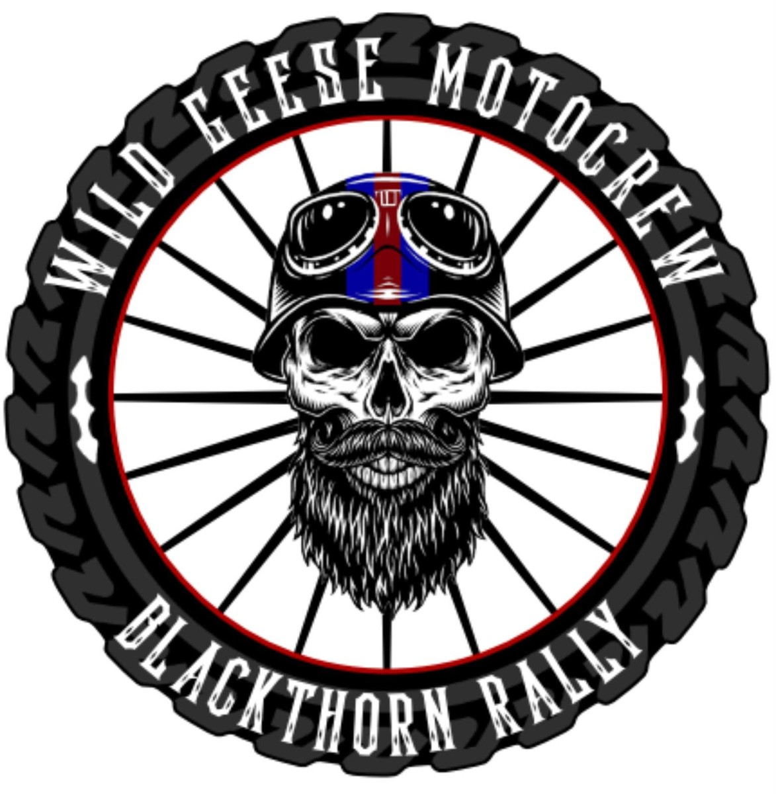
A veteran-led rally raid, ridden every year since 2016 by the Wild Geese Racing Team. Dirt bikes and side-by-sides across some of the hardest ground on earth, and a conservation or community project delivered on every edition.
The Blackthorn Rally began in 2015 as a promise between friends who had served together in the British Army: the adventures would continue.
Every year since, the crew has taken on a serious off-road route of its own making. Riders are on enduro bikes; drivers are in side-by-side buggies. The early rallies crossed the Moroccan Sahara. Then came Kenya, Tanzania and, for the tenth anniversary, Colombia's coffee country from Cali to Medellín. In 2026 the rally returned to Morocco, over the Atlas, through the Dadès Gorge and into the dunes of Erg Chebbi and Erg Chigaga.
The rally is self-funded by the people who ride it. What it raises goes, in full, to the year's project and to getting wounded, injured and sick veterans onto the start line.
It is founded and organised by Ben Farrell MBE, who commanded the Irish Guards, alongside the fellow veterans who have ridden with him since the first edition.
"Every year we come together, soldiers turned riders and ralliers, united by the road and a sense of adventure and something bigger than ourselves. Some of us left parts of ourselves on the battlefield. But on these vehicles, we feel whole again." From the Colombia 2025 film
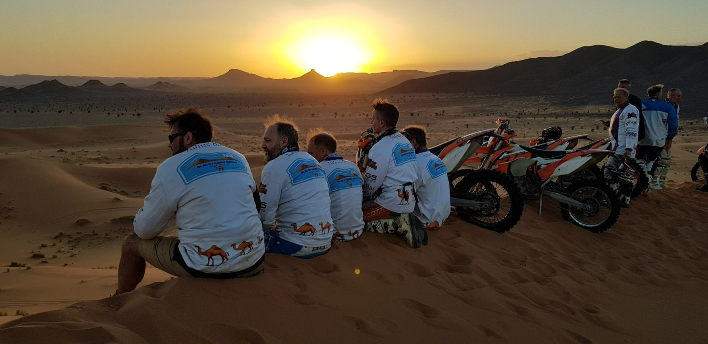
Each edition carries its own plate. From the Sahara to the Andes, the route changes; the idea does not.
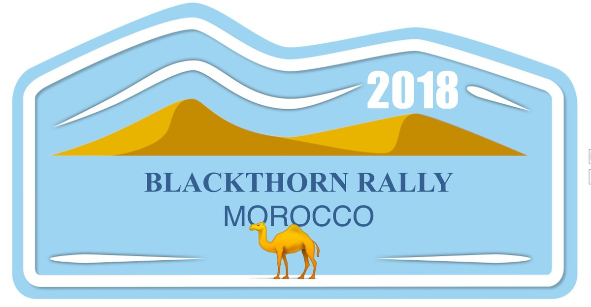
The early rallies: the Sahara by dirt bike, with the first wounded, injured and sick veterans riding alongside.
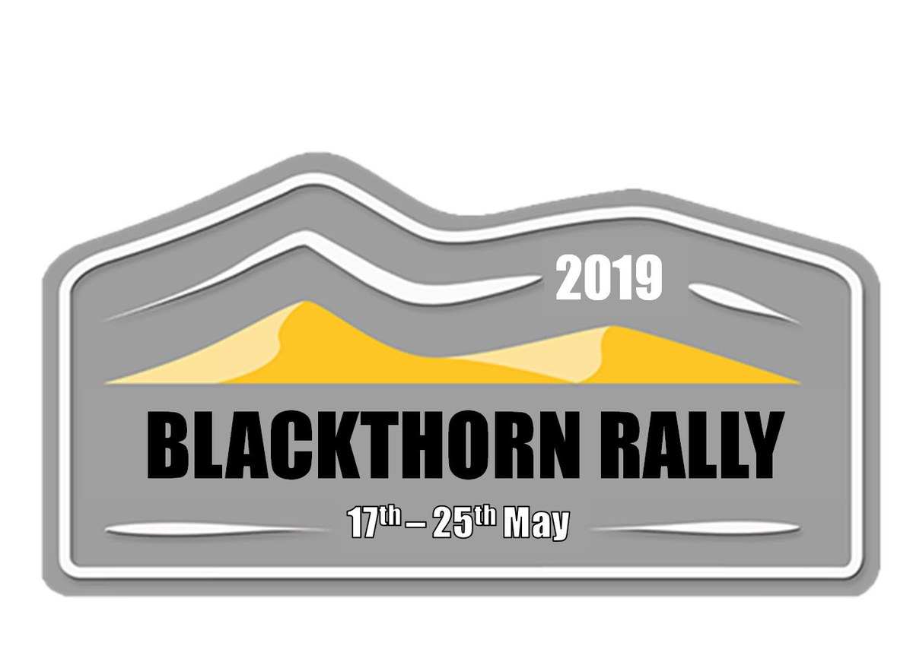
Dunes, camels and nine days on the bikes.
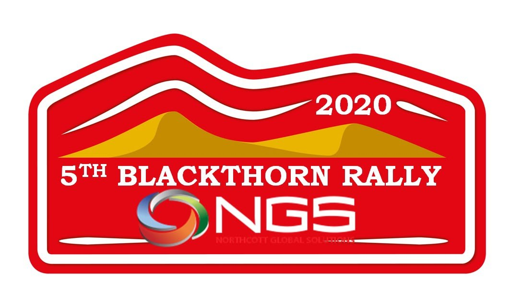
The fifth rally, run with the support of Northcott Global Solutions.
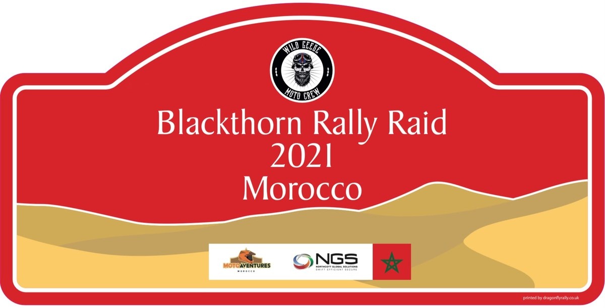
Rally raid format across the Moroccan desert.
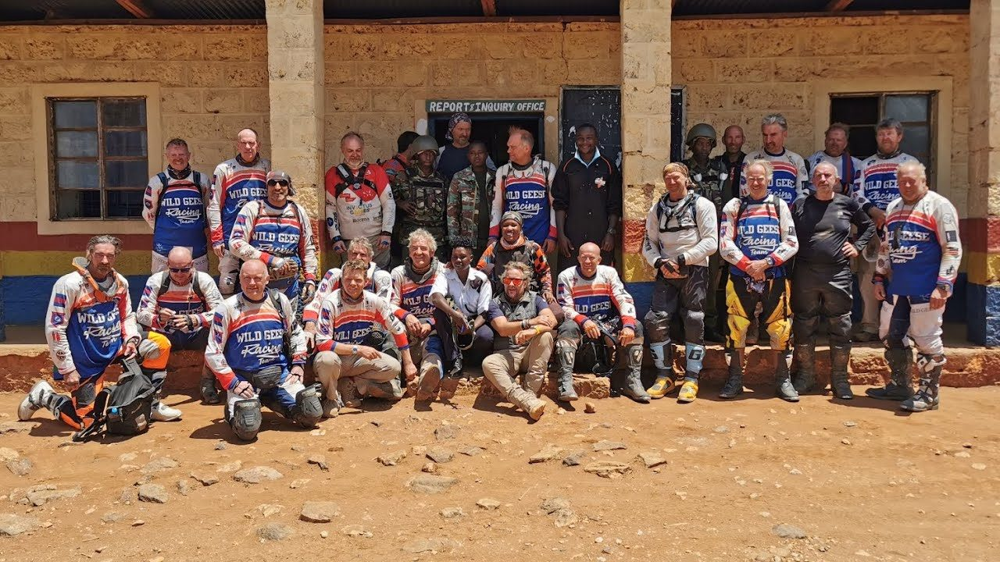
The rally moves to East Africa, riding out of Nairobi with Offroad Adventure East Africa, and rebuilds a school in the north. The team held its own two-minute silence in the bush on the day of the Queen's funeral.
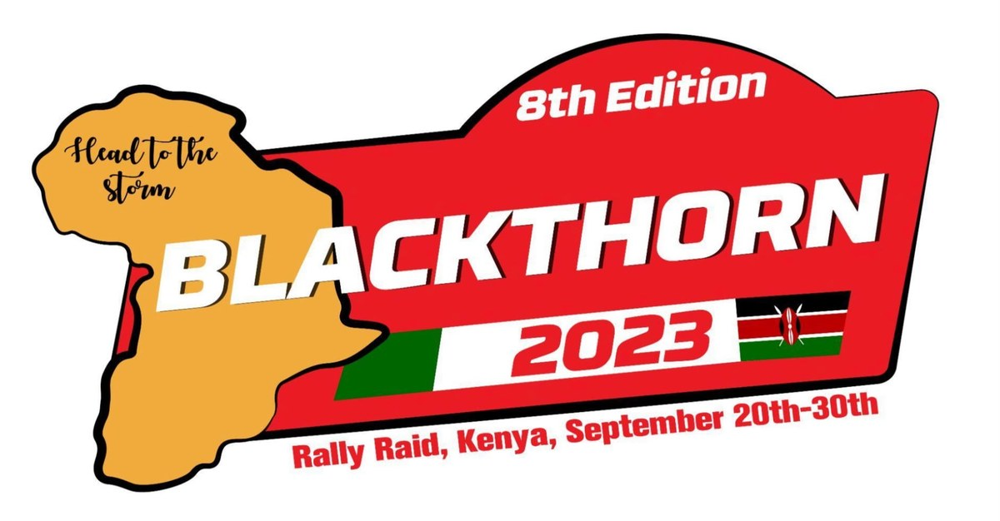
Ten days and 1,200 km: 30 on the team, 20-plus bikes and five buggies, with a wheelchair user and an amputee riding. The toughest day was 235 km of rocky riverbed. Project: water pans for around 400 elephants in the Tsavo ecosystem.
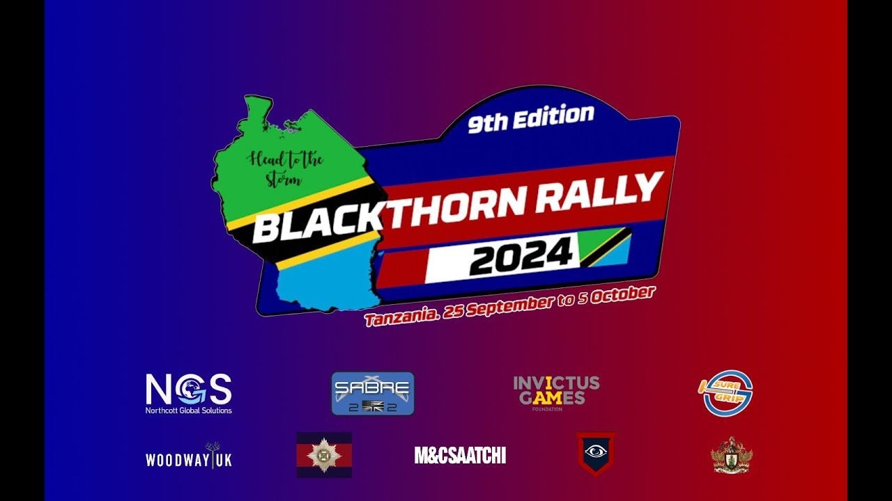
Nine days, roughly 300 km a day in the buggies, Kilimanjaro on the horizon and Zanzibar at the end. Project: the Masai giraffe, with the Arusha Giraffe Centre.
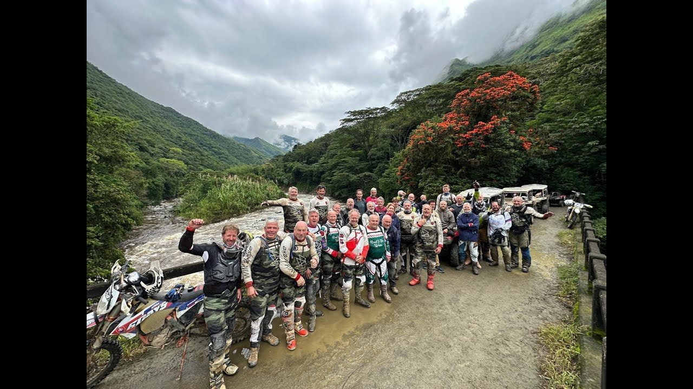
The tenth anniversary: six days and 35 riders through the coffee region, climbing to 3,500 m, with more than £30,000 raised to protect the spectacled bear.
Atlas Mountains, Dadès Gorge, river crossings, salt flats, then the dunes of Erg Chebbi and Erg Chigaga. 35 riders and drivers. "Probably the hardest riding we've done."
Alongside the riding, every edition delivers something that lasts for the people and wildlife along the route.
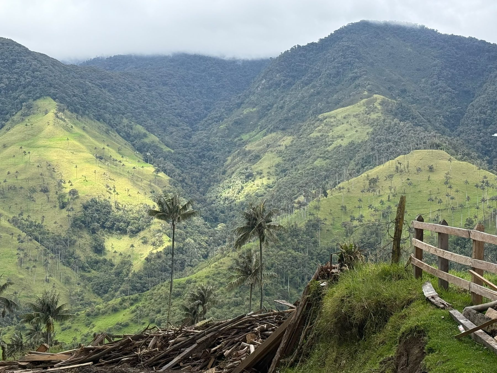
More than £30,000 raised with Fundación Tremarctos to help create a protected ecosystem in Tolima: monitoring, nine conservation wardens and eco-tourism, in a district where the bear population is thought to be around 135 and falling.
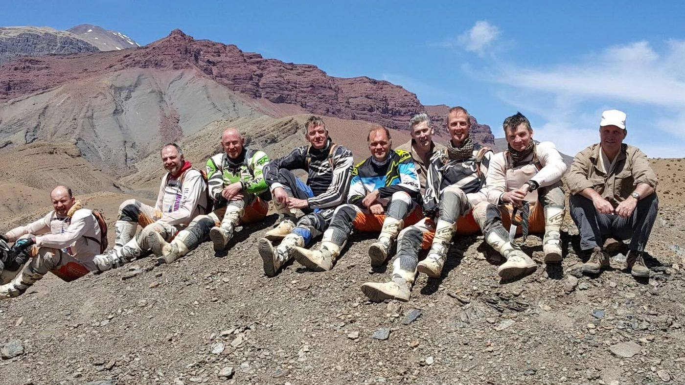
Partnered with the Arusha Giraffe Centre to secure the future of the Masai giraffe, funding its education work and a minibus for visiting schools. The Prince and Princess of Wales made the rally a beneficiary of their charity polo day that summer.
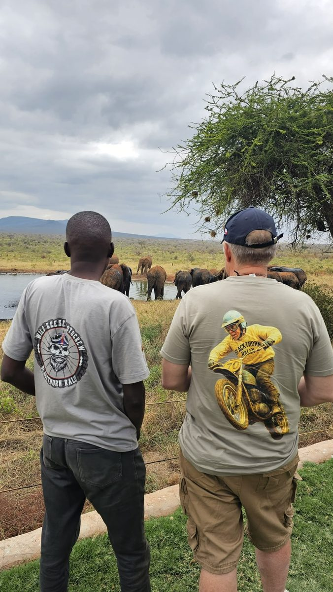
Water pans at the Teita Estate Wildlife Sanctuary for a community of around 400 elephants, easing friction between wildlife and neighbouring villages. Supported by HRH The Prince of Wales as he ended his tenure as Colonel of the Irish Guards.
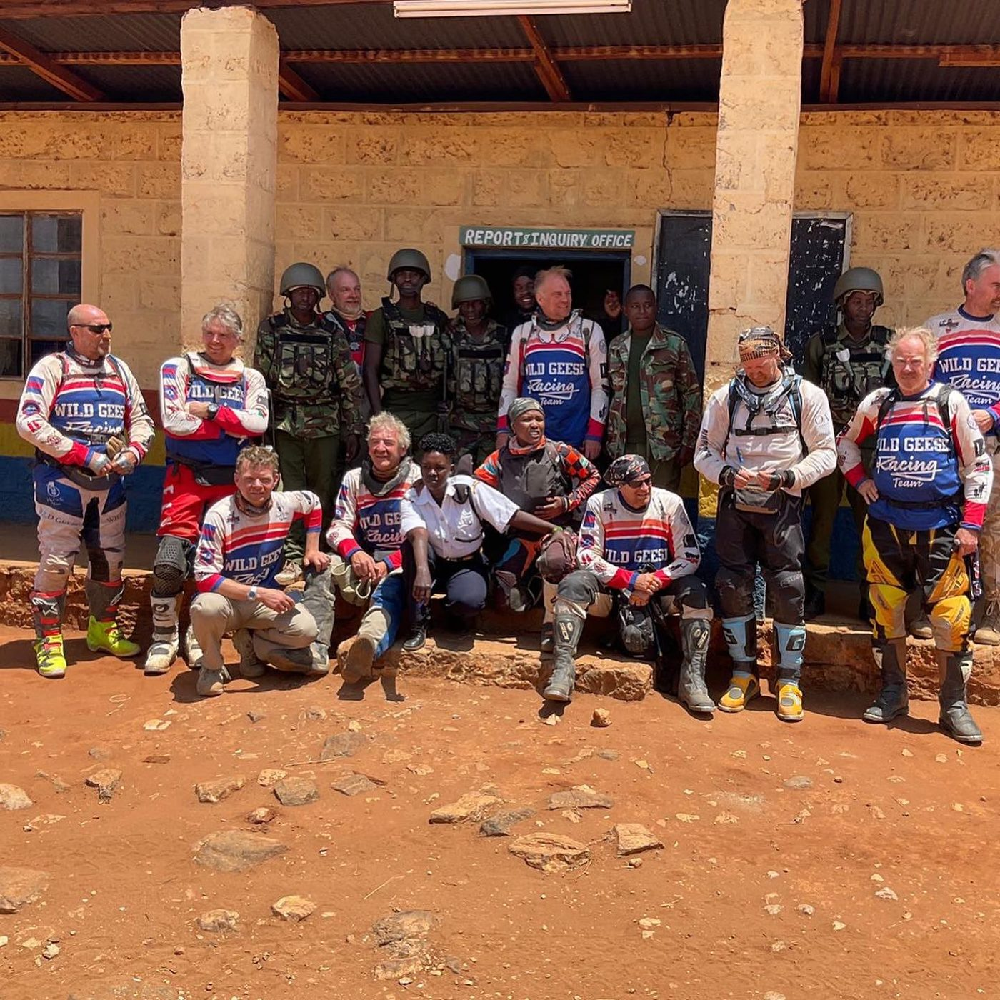
The rally's first East African project rebuilt facilities at a school in northern Kenya, delivered by the riders themselves on the way through.
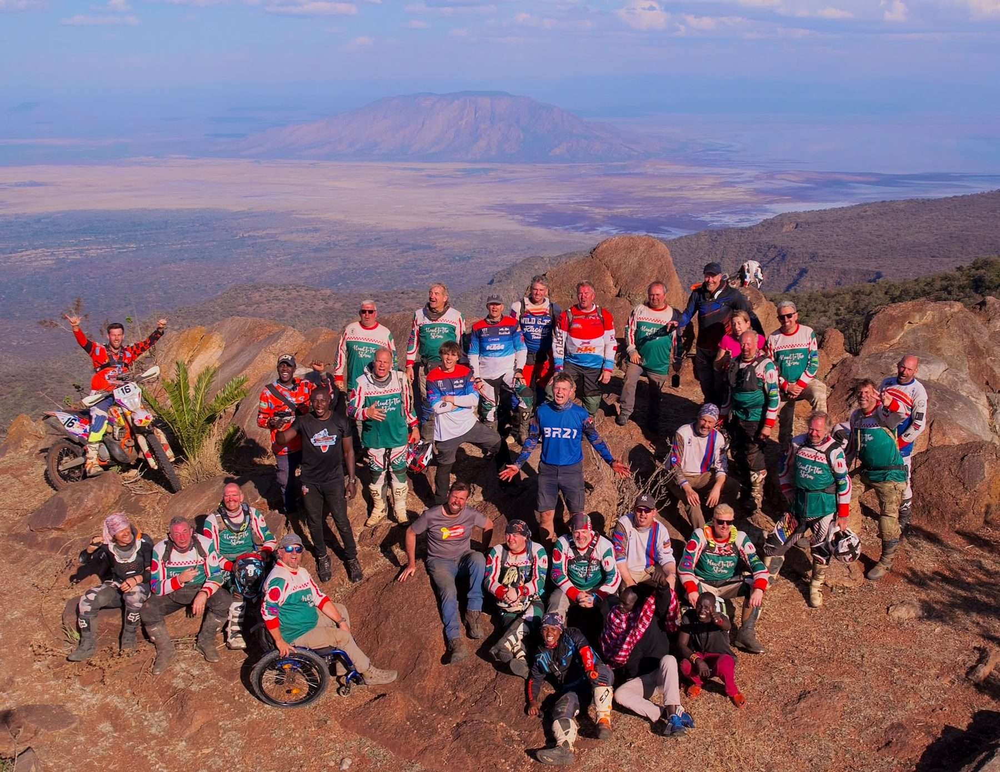
Some of the team are wounded, injured and sick veterans living with injuries sustained in conflict. Buggies are adapted, with hand controls and modified cabs, so those injuries do not keep anyone off the rally. Riders with no working legs between them have driven 300 km days across Tanzania.
That has always been the point. Everyone is there as part of the same team, facing the same desert and sharing the same experience.
Each edition is filmed by the crew. Press play to watch on this page.
"Ten hours a day inside a helmet, focused only on the terrain ahead. And, strangely, one of the best ways I know to recharge."Ben Farrell MBE, founder, after Morocco 2026
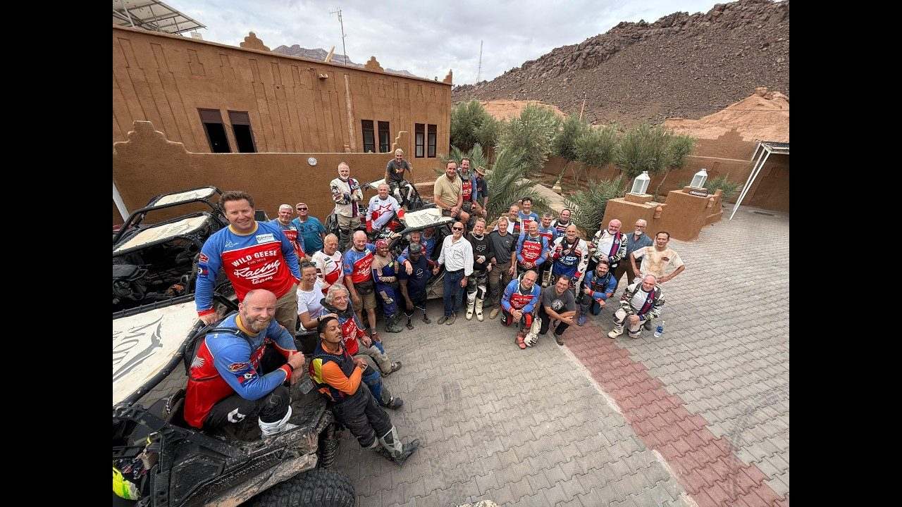
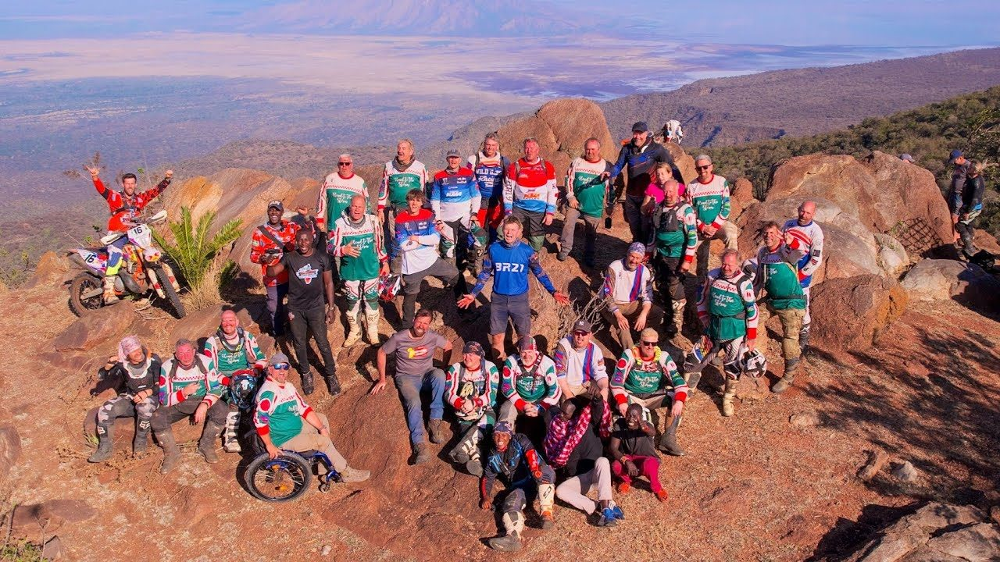
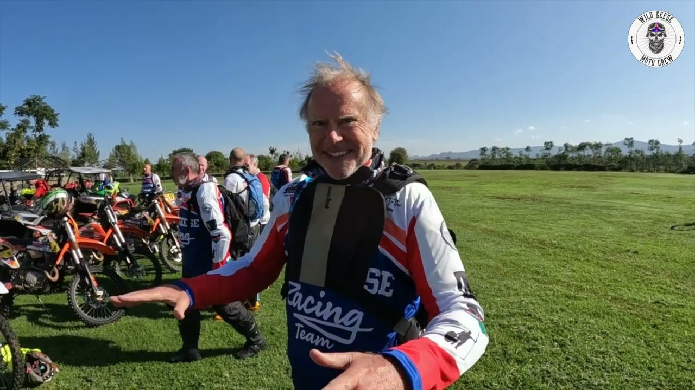
Organisations that have supported recent rallies and their projects.
An annual off-road rally raid organised and ridden by military veterans, under the Wild Geese Racing Team banner. It started in 2015 as a pact between friends who had served together, and the first rally ran in 2016. Each edition is a multi-day route of our own design, on dirt bikes and side-by-side buggies, paired with a conservation or community project in the host country.
Morocco for the early editions, then Kenya (2022 and 2023), Tanzania (2024), Colombia for the tenth anniversary (2025) and back to Morocco for the eleventh in September 2026. The next route is announced to the team first and then on Instagram.
The team is drawn from veterans and the friends who ride with them, usually 25 to 35 people in a year. Some of the crew are wounded, injured and sick veterans living with injuries sustained in conflict. If you think you belong on the start line, get in touch and tell us about yourself.
Enduro dirt bikes for the riders and side-by-side buggies for the drivers. Several buggies are adapted with hand controls and modified cabs so that an injury is not a reason to stay at home. Local operators supply the machines and support vehicles in each country.
The riders and drivers pay their own way. Everything raised from supporters goes in full to that year's project, or to the cost of getting a wounded veteran onto the rally. Sponsors have included Northcott Global Solutions, the Invictus Games Foundation, Blesma and the Irish Guards.
A rebuilt school in northern Kenya. Water pans for around 400 elephants at the Teita Estate sanctuary in the Tsavo ecosystem. Education and transport for the Arusha Giraffe Centre's work on the Masai giraffe. A protected area for the spectacled bear in Tolima, Colombia, with Fundación Tremarctos. Each project is chosen with local partners and visited by the team during the rally.
Yes. Sponsorship covers a project, a wounded veteran's place, or the rally itself, and sponsors travel with us in spirit on the plates, jerseys and films. Use the contact button below and we will come back to you.
The shop is being rebuilt. In the meantime, message us on Instagram and we will let you know what is still available.
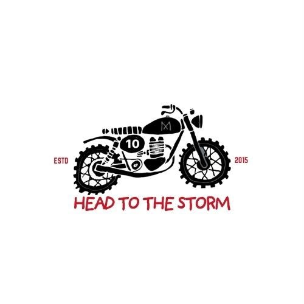
The riders pay their own way. Every pound donated goes to the year's conservation or community project, or to getting a wounded veteran onto the start line. If you or your business would like to support the next rally, we would love to hear from you.